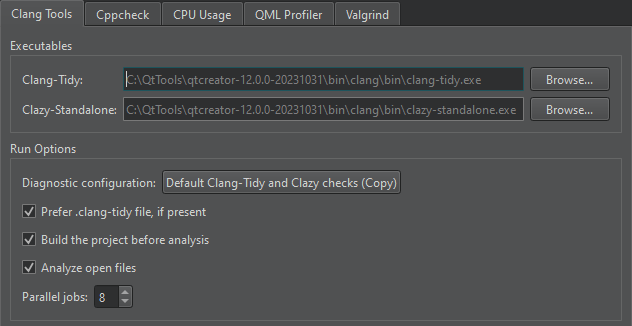

Clang Tools
Detect problems in C, C++, and Objective-C programs with Clang-Tidy and Clazy.
To configure Clang diagnostics globally for Clang tools:
- Go to Preferences > Analyzer > Clang Tools.

- In the Clang-Tidy and Clazy-Standalone fields, set the paths to the executables to use.
- The Diagnostic configuration field shows the checks to perform. Select the value of the field to open the Diagnostic Configurations dialog, where you can select and edit the checks to perform.
To perform checks from a Clang-Tidy configuration file instead, select Prefer .clang-tidy file, if present.
- To build the project before running the Clang tools, select Build the project before analysis. The Clang tools do not require that you build the project before analysis, but they might display misleading warnings about files missing that are generated during the build. For big projects, not building the project might save some time.
- To disable automatic analysis of open documents, clear Analyze open files.
- In the Parallel jobs field, select the number of jobs to run in parallel to make the analysis faster on multi-core processors.
See also Configure Clang diagnostics, Analyze code with Clang-Tidy and Clazy, Specify Clang tools settings, and Issues.